Plan wycieczki
Zwiedzone miejsca
- Łańcut
- Imielty Ług
- Lublin
- Poleski Park Narodowy
- Kazimierz Dolny
Czas wycieczki: 4 dni
Skład osobowy: 2 dorosłych, 2 dzieciaki
Punkt początkowy i końcowy: Sułkowice
Na tą wycieczkę musieliśmy spakować więcej rzeczy niż na wcześniejsze, bo był to nasz pierwszy wyjazd w czwórkę. Nasza młodsza córka miała już miesiąc, więc stwierdziliśmy, że to najwyższy czas na wspólną podróż. Ale tak poważniej, to chcieliśmy po prostu odpocząć, bo ciąża trochę dała mi w kość i potrzebowaliśmy trochę wspólnego czasu spędzonego tak, jak lubimy najbardziej. Tempo zwiedzania było wolne ale udało nam się podładować baterie.
Zwiedzanie
Zamek w Łańcucie i Poleski Park Narodowy
Naszą podróż rozpoczęliśmy od Łańcuta. Główną atrakcją miasta jest słynny zamek, należący niegdyś do rodzin Lubomirskich i Potockich. Zwiedziliśmy wnętrza, przeszliśmy się po otaczającym go parku i zajrzeliśmy do powozowni, w której można zobaczyć jedną z największych kolekcji zabytkowych powozów w Polsce. Na terenie kompleksu znajduje się również storczykarnia, jednak podczas naszej wizyty była niestety zamknięta. Kolejnym przystankiem były okolice Poleskiego Parku Narodowego, gdzie wybraliśmy się na spacer ścieżką przyrodniczą „Imielty Ług”. To jedna z najpopularniejszych ścieżek Poleskiego Parku Narodowego. Prowadzi przez torfowiska i mokradła, które są ostoją wielu gatunków ptaków oraz roślin charakterystycznych dla Polesia.
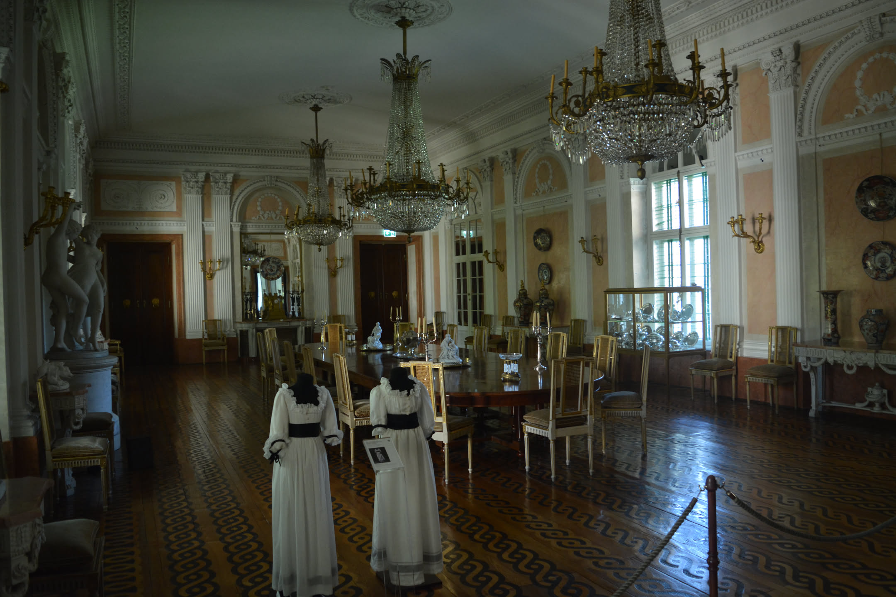
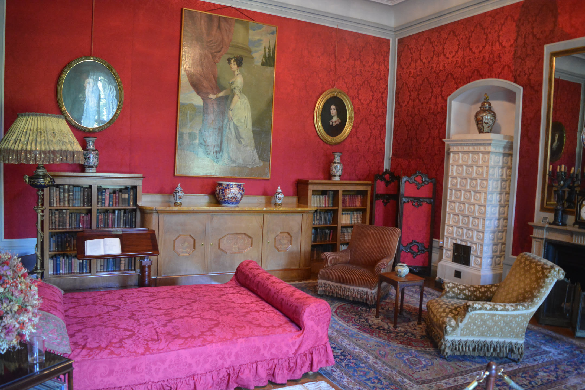
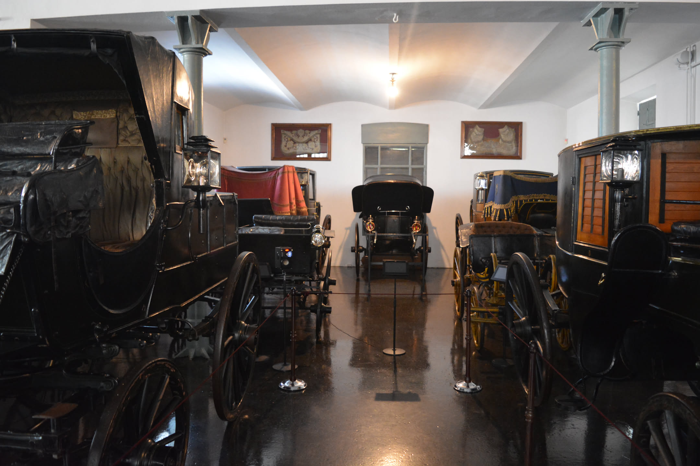
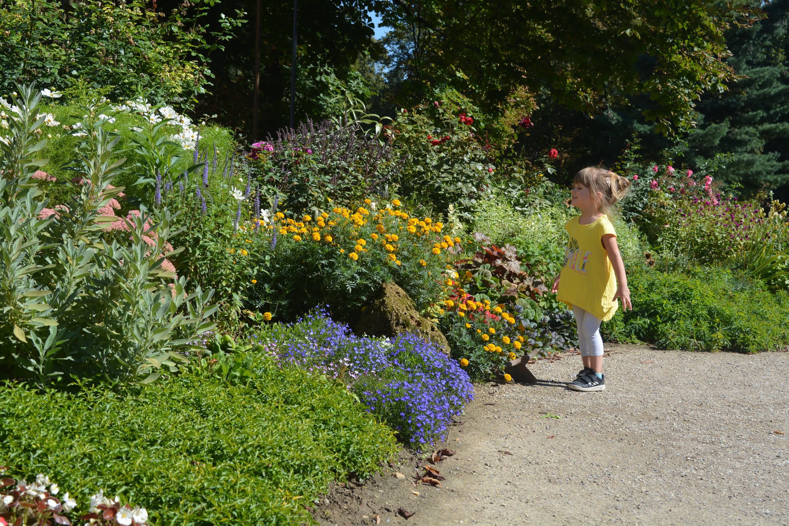
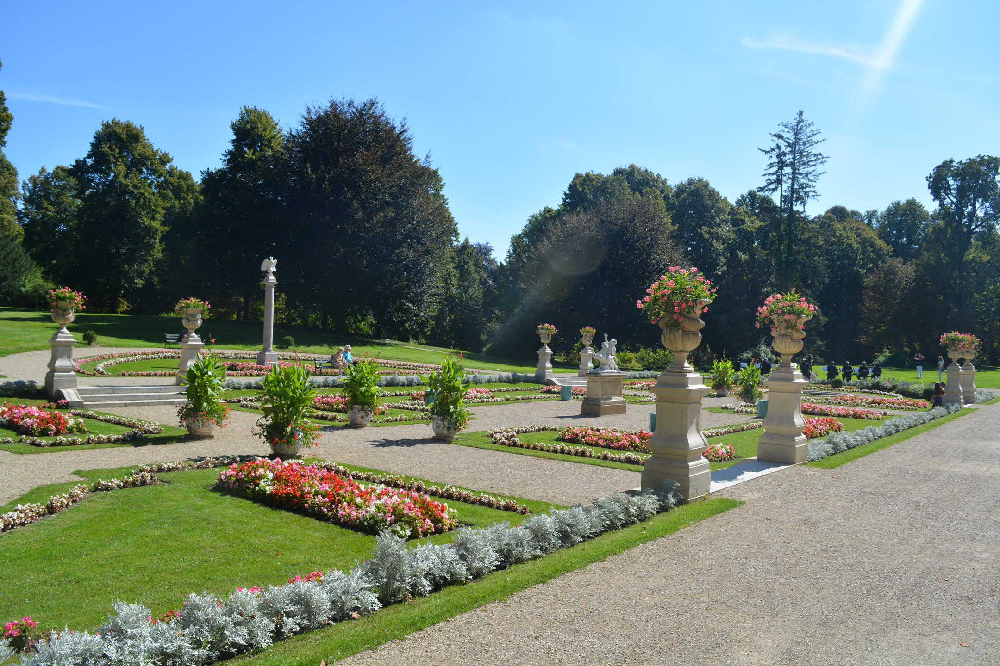
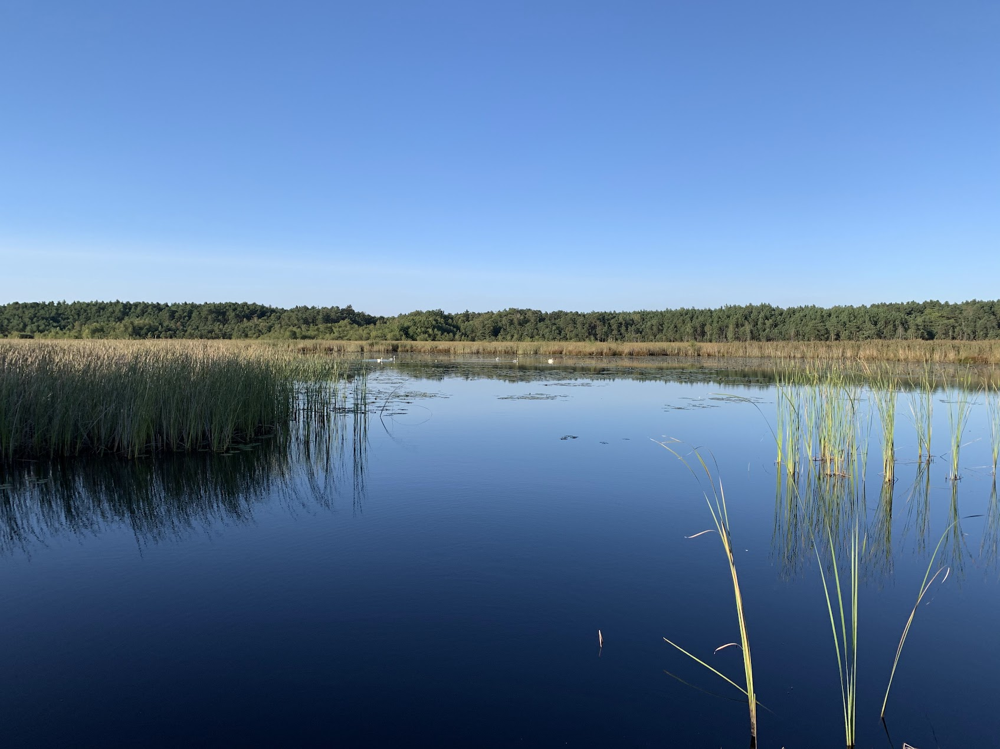
Zwiedzanie
Lublin
Drugi dzień naszego wyjazdu poświęciliśmy na zwiedzanie Lublina. Spacer rozpoczęliśmy rynku otoczonego kolorowymi kamienicami. Przeszliśmy przez Bramę Krakowską, czyli jeden z najbardziej rozpoznawalnych symboli miasta. Wcześniej jednak postanowiliśmy spróbować słynnego cebularza. Niestety, ten, na którego trafiliśmy, był tak suchy, że bardziej niż kulinarne objawienie zapamiętaliśmy konieczność popicia go sporą ilością wody. Następnie odwiedziliśmy Zamek Lubelski, którego historia sięga średniowiecza. Na przestrzeni wieków pełnił on różne funkcje: był królewską rezydencją, twierdzą, a w XIX wieku został przebudowany na więzienie. Funkcjonowało ono aż do 1954 roku, a podczas II wojny światowej przetrzymywano tam tysiące więźniów politycznych. Dziś w zamku mieści się muzeum, a jedną z najstarszych części kompleksu jest XIII-wieczny donżon, czyli okrągła wieża widoczna z wielu miejsc w mieście.
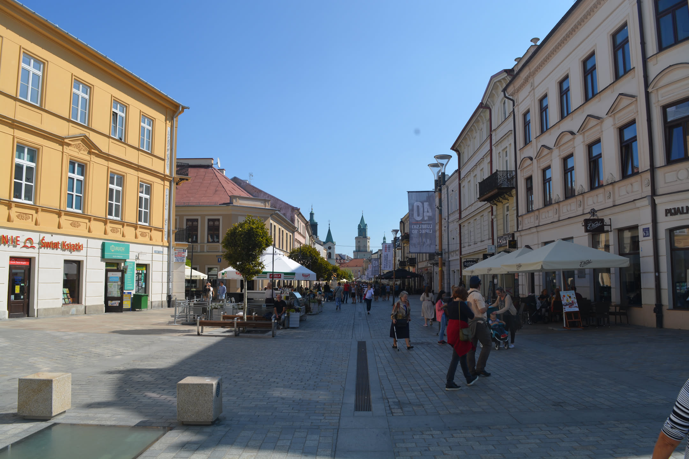
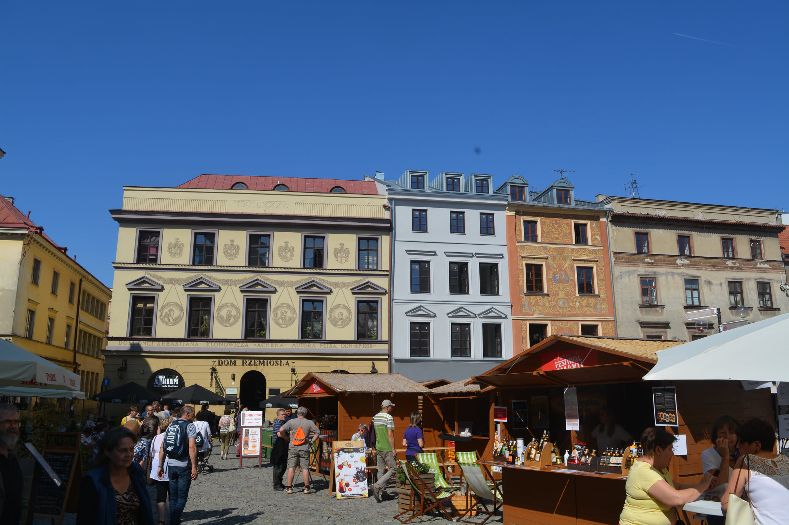
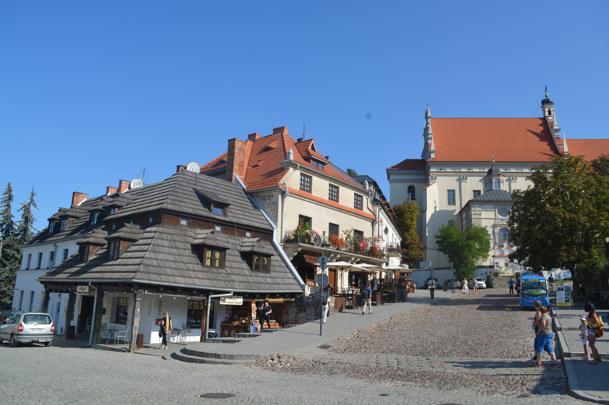
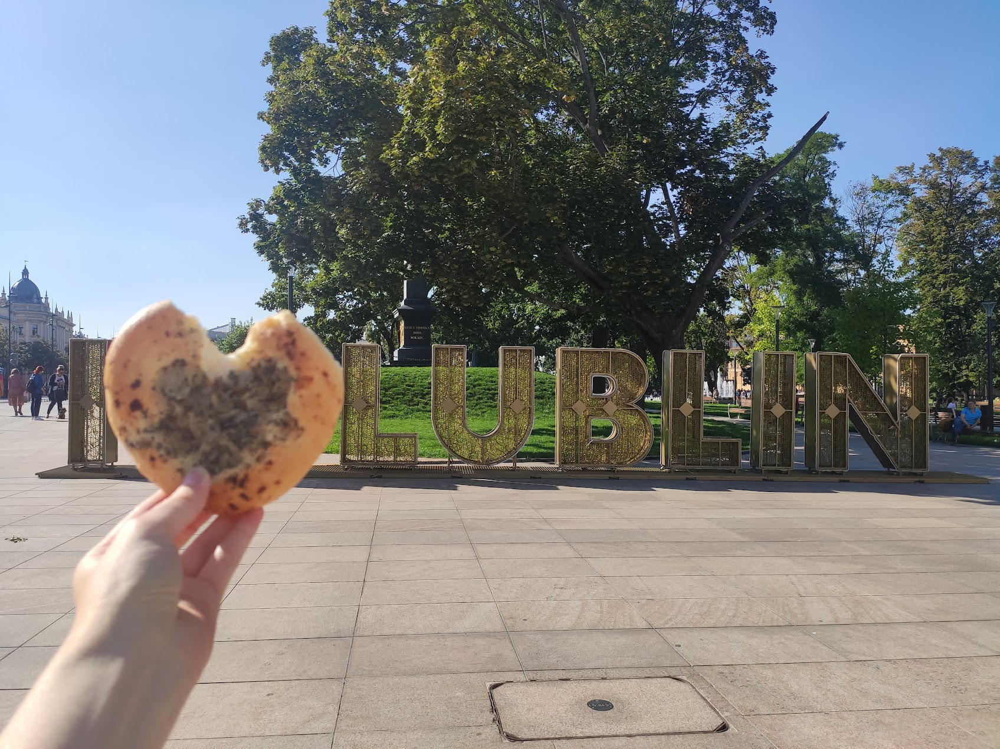
Zwiedzanie
Poleski Park Narodowy i Kazimierz Dolny
Kolejny dzień rozpoczęliśmy od wizyty w Poleskim Parku Narodowym. Wybraliśmy się na ścieżkę przyrodniczą „Dąb Dominik”, która prowadzi przez lasy, torfowiska i tereny podmokłe wokół jeziora Moszne. Znaczną część trasy pokonuje się drewnianymi pomostami. Poleski Park Narodowy jest jednym z najmniejszych parków narodowych w Polsce, ale jednocześnie chroni jedne z najcenniejszych terenów bagiennych w kraju. Po południu pojechaliśmy do Kazimierza Dolnego. Spacerowaliśmy po rynku, zwiedziliśmy ruiny zamku i przeszliśmy się po uliczkach starego miasta. Weszliśmy też na zamek, z którego rozciąga się piękny widok na Wisłę i okolicę. Noc spędziliśmy w dawnej synagodze, która dziś pełni funkcję hotelu. Był to zdecydowanie jeden z najbardziej nietypowy nocleg podczas całego wyjazdu. Wracając do domu zatrzymaliśmy się jeszcze w Parku Strzeleckim w Tarnowie. Znajduje się tam Mauzoleum generała Józefa Bema, ale nam od początku zależało na wielkim placu zabaw, na którym spędziliśmy finalnie bardzo dużo czasu.
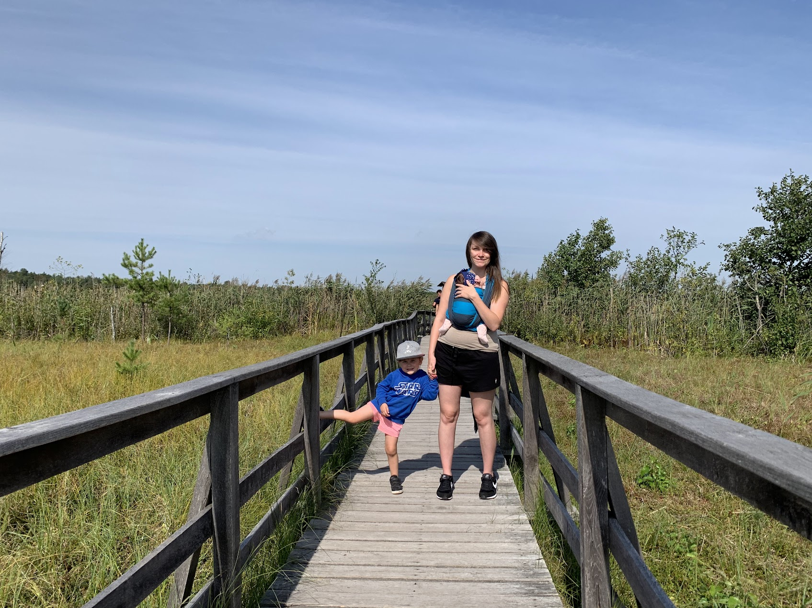
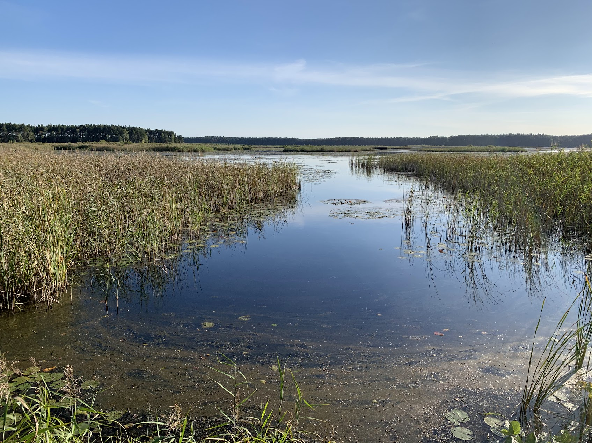
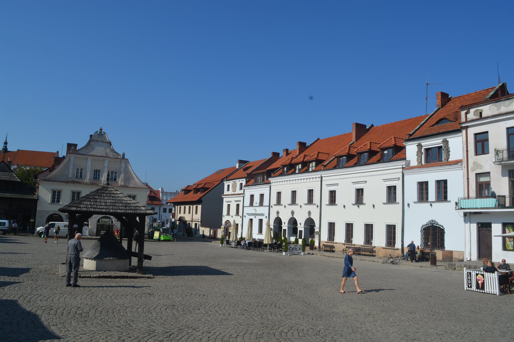
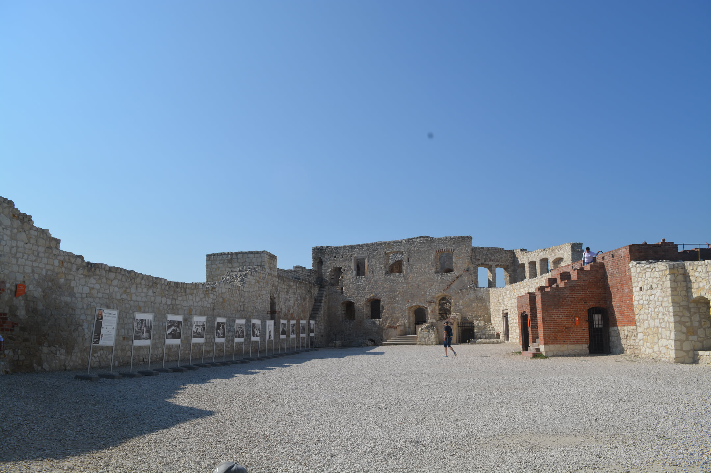
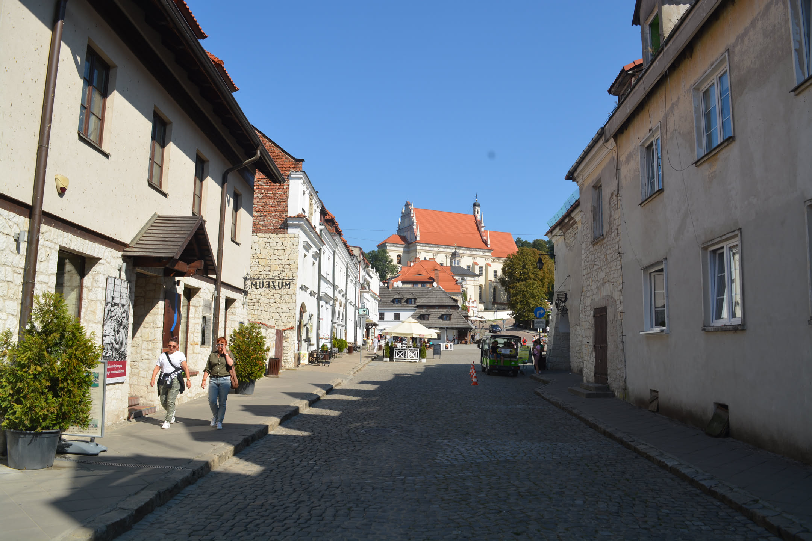